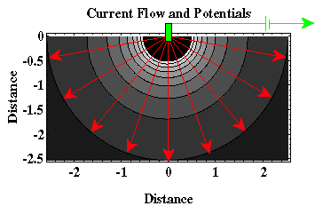

Current Densities and Equipotentials
To describe the nature of electrical current flow in media occupying a volume, we must move beyond our simple notions of current and voltage gained from our experience with wires, resistors, and batteries. In the Earth, or any three-dimensional body, electrical current is not constrained to flow along a single path as it does in a wire. Consider as an example the situation shown below. A battery is connected to the earth by wires and electrodes at two remote points (that is, the electrical connections to the earth are very distant from one another). The Earth, not being a perfect insulator, conducts the electrical current imparted by the battery. At this stage, let's assume the resistivity of the earth is uniform throughout the Earth. How does the current flow through the Earth?

In this example, current flows (the red lines) out from the electrode (the green square) radially along straight lines (the second electrode is far to the right of the figure as it is drawn). If we could take a voltmeter and measure the voltage drop imposed by the resistivity of the medium from a distance very far from the current electrode to various places in the media, we would find that the voltage drops would be constant along circular lines centered at the electrode (That is, one of the leads to the voltmeter would have to make contact with the ground at a distance very far from the electrode, the other is then moved throughout the medium). These lines are referred to as equipotentials (think equal voltage). In three-dimensions, they form hemispheres centered on the electrodes. Several equipotential lines are shown in black with the voltage drop associated by each line shown in gray scale. The darker the gray scale, the smaller the potential drop between this location and a location very far from the current electrode.
Voltage differences between any two points in the medium can be computed by simply subtracting the potentials at the two points. Thus, if the two points line on a hemisphere centered at the current electrode, there will be no voltage difference recorded, because these two locations lie along an equipotential surface. That is, if you were to take your voltmeter and connect to two points within the earth that were on the same equipotential surface, you would read a voltage difference of zero. When compared to the potential near the electrode, voltage differences will increase away from the electrode. This should make sense, what you are measuring with your voltmeter is proportional to the current passing through the media times the resistance of the media as given by Ohm's law. As you move away from the electrode, your current is traveling through more of the media. The resistance increases as the path increases, hence, the voltage increases.
At any point in the medium, the current density is defined as the amount of current passing through a unit area of an equipotential surface. Thus, close to the electrode, all of the current is passing through a very small volume. The current crossing any equipotential surface normalized by the area of the surface will thus be high. Far away from the electrode, this same current occupies a much larger volume of the medium. The current crossing any equipontential surface (which is the same regardless of where the surface is in the volume) normalized by the area of the surface (which is now large) will be small. Current density has the units of Amperes per meter squared.
Resistivity
- Current Flow and Ohm's Law pg 4
- The Fund. Electrical Property is Resistivity, NOT Resistance pg 5
- Resistivities for Common Earth Materialspg 6
- Current Density and Electric Fieldpg 7
- A First Estimate of Resistivitypg 8
- Current Flow From Two Closely Spaced Electrodespg 9
- A Practical Way of Measuring Resistivity pg 10
- Sources of Noise pg 11
- Depth of Current Penetration V.S. Current ElectrodeSpacing pg 12
- Current Flow in Layered Media pg 13
- Variation in Apparent Resistivity: Layered Versus Homogeneous Media pg 14
- Current Flow in Layered Media Versus Electrode Spacing pg 15
- A Second Example of Current Flow in Layered Mediapg 16